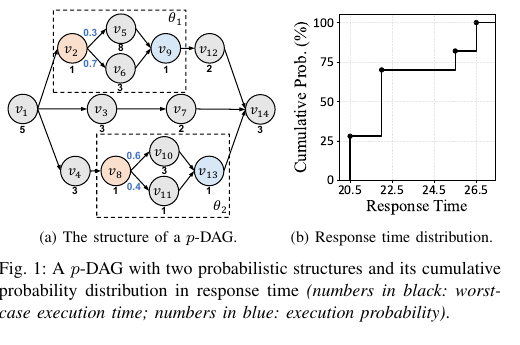
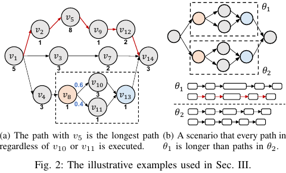
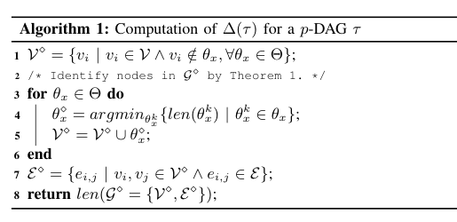
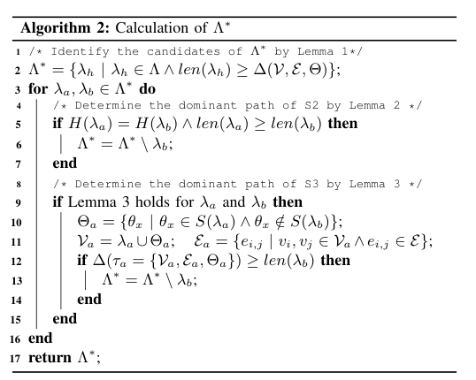
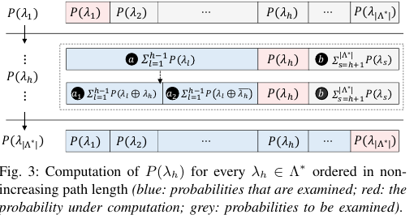
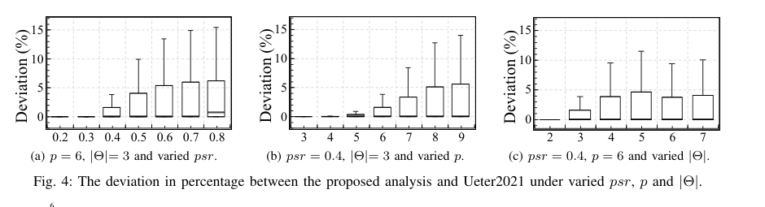
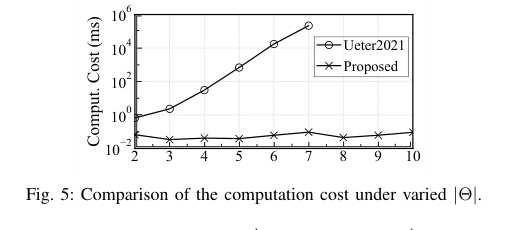
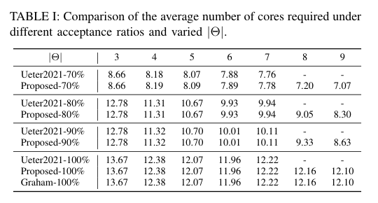

利用最长路径不确定性：概率 DAG 任务的响应时间分析
摘要。并行实时系统，例如自动驾驶系统，常包含复杂依赖和执行不确定性。这些不确定性会造成显著的时间波动，并可表示为概率分布。已有时序分析要么只给出单一保守边界，要么必须穷举每一种执行场景，扩展性严重受限，因而难以充分利用概率时序行为并容易导致次优设计。本文将系统建模为概率有向无环图（p-DAG），提出一种基于所有执行场景最长路径的概率响应时间分析。该方法不再枚举全部场景，而是先依据 p-DAG 结构识别所有可能成为最长路径的路径并计算其出现概率，再为每条最长路径计算最坏情形干扰工作量，从而构造带正确性保证的完整概率响应时间分布。实验表明，与枚举式方法相比，该分析可扩展到大型 p-DAG，计算成本降低六个数量级，同时平均偏差仅 1.04%，多数 p-DAG 下低于 5%，并能帮助系统设计获得更高资源效率。
1 引言
多核实时系统中的并行任务通常含有复杂依赖，更重要的是含有执行不确定性，例如在不同条件下执行不同分支的 if-else 语句。这种不确定性既可能发生在单个任务内部，也可能发生在并行任务之间，使系统时序行为出现明显变化，并可用概率时序分布描述。
多数设计与验证方法用 DAG 描述任务依赖，但通常无视 DAG 内部的执行不确定性，只给出单一保守时间边界，也就是最坏响应时间。随着系统更复杂、更非确定化，这类方法会因为分析结果信息不足且过度悲观而不够有效。以 ISO-26262 为例，汽车安全完整性等级与失效率相关，需要能够支持更细粒度决策的概率时序分析。

已有关于单线程概率 WCET 的研究较多，但针对带概率执行的 DAG 任务（p-DAG）的结果有限。现有方法通过枚举所有执行场景并对每个场景应用 Graham 边界来产生概率响应时间分布。图 1 展示了一个包含两个概率结构的例子：每次释放时，每个概率结构只执行一个分支，因此产生不同 DAG 结构和不同响应时间。问题在于，随着概率结构增多，枚举会迅速失去可扩展性，无法处理大型复杂 p-DAG。
本文的贡献是提出第一种面向 p-DAG 的概率响应时间分析：首先用最长路径下界筛选所有可能最长路径；然后为每条路径计算其被执行且成为最长路径的概率；最后计算与每条最长路径相关的最坏干扰工作量，构造完整的概率响应时间分布。该方法避免枚举所有非条件图，并能与概率 WCET 分析结合使用。
2 任务模型与预备知识
本文分析在 m 个对称核心上运行的周期性 p-DAG。一个 p-DAG 任务定义为 \(\tau=\{V,E,T,D\}\)，其中 V 是节点集合，E 是有向边集合，T 是周期，D 是截止期。节点 \(v_{i}\) 表示必须顺序执行的一段计算，其最坏执行时间为 \(C_{i}\)；边 \(e_{i,j}\) 表示依赖关系，即 \(v_{j}\) 只有在 \(v_{i}\) 完成后才能开始。任务假设只有一个源节点和一个汇节点，所有从源到汇的路径集合记为 \(\Lambda\)。
p-DAG 还包含概率结构 \(\Theta=\{\theta_1,\theta_2,\ldots,\theta_n\}\)。每个概率结构 \(\theta_{x}\) 有入口、出口和若干概率分支，每个分支 \(\theta_{x}^{k}\) 是只含非条件节点的子图，执行概率由 \(F(\theta_{x}^{k})\) 给出，并满足同一概率结构中所有分支概率和为 1。根据每个概率结构实际选择的分支，任务 \(\tau\) 可释放出若干唯一的非条件图 \(G=\{G_1,G_2,\ldots\}\)。对每个 \(G_{u}\)，\(len(G_{u})\) 表示其最长路径长度，\(vol(G_{u})\) 表示工作量，\(H(G_{u})\) 表示执行分支集合，\(S(G_{u})\) 表示这些分支所属概率结构。所有图中唯一的最长路径集合记为 \(\Lambda^\ast\)。

传统 Graham 边界将响应时间 \(R\) 上界写成 \(\mathrm{len}(\tau)+(\sum C_i-\mathrm{len}(\tau))/m\)，其中 len(τ) 是 τ 中最长路径长度。该边界忽略了概率分支带来的执行变化。例如图 1 中的 p-DAG 在时间 26 内完成的概率超过 70%，在时间 21 内完成的概率超过 25%；单一最坏边界无法表达这种概率信息，会导致过度配置资源。
3 识别 p-DAG 的最长路径
现有方法通过枚举每个 \(G_{u}\) 来确定 \(\Lambda^\ast\)，复杂度很高，并且同一最长路径可能在多个场景中重复出现。本文先构造一个下界 \(\Delta(\tau)\)，用于过滤不可能成为最长路径的候选路径。核心思想是：对每个概率结构选取长度最短的分支，与所有非条件节点一起构造一个图 \(G^\diamond\)，其最长路径给出所有场景最长路径的下界。


定理 1。若 \(\theta_x^\diamond\) 是 \(G^\diamond\) 中在 \(\theta_{x}\) 下执行的分支，则 \(\mathrm{len}(\theta_x^\diamond)\) 不大于 \(\theta_{x}\) 中任意分支的长度。若存在某个 \(G_{u}\) 的最长路径比 \(G^\diamond\) 更短，则至少有一个概率结构中被选分支比 \(G^\diamond\) 选中的最短分支还短，与构造矛盾。因此 \(G^\diamond\) 可作为下界构造的充分条件。
算法 2 在所有路径中先保留 \(\mathrm{len}(\lambda_h) \ge \Delta(\tau)\) 的路径，再通过支配关系删除不可能成为最长路径的候选。若两条路径总是在相同分支集合下同时执行，则较短路径被较长路径支配；若两条路径可在不同图中执行，则构造与 \(\lambda_{a}\) 相关的子结构 \(\tau_{a}\)，若 \(\Delta(\tau_a)\) 已超过 \(\lambda_{b}\) 长度，则 \(\lambda_{b}\) 不可能是任何场景中的最长路径。算法最终返回精确的 \(\Lambda^\ast\)，时间复杂度为 \(O(n^{4})\)。
4 最长路径的概率分析
对每条 \(\lambda_h \in \Lambda^\ast\)，需要计算它被执行且成为最长路径的概率 \(P(\lambda_{h})\)。若路径所需的每个分支都执行，则其执行概率是对应分支概率的乘积；但它成为最长路径还要求所有更长路径不执行。直接计算这些互斥事件很复杂，特别是长路径共享概率结构时。

图 3 将 \(\Lambda^\ast\) 中路径按长度非递增排序。对于路径 \(\lambda_{h}\)，更长路径的概率已经在前面计算；较短路径的概率尚未全部确定。论文通过包含-排除式上界计算 \(\lambda_{l}\) 与 \(\lambda_{h}\) 的互斥关系，并在必要时将 \(P(\lambda_{h})\) 截断到非负且总概率不超过 1 的范围。定理 3 和定理 4 证明，这种偏差不会沿路径序列无界放大，且计算得到的概率满足正确性要求。
5 构造概率时序分布
得到每条最长路径的概率后，分析对每条 \(\lambda_{h}\) 计算其最坏干扰工作量。执行 \(\lambda_{h}\) 时，系统中除最长路径外的节点形成干扰工作量；响应时间由最长路径长度与并行核心上剩余工作量共同决定。将每条最长路径对应的响应时间与 \(P(\lambda_{h})\) 合并，即得到 p-DAG 的概率响应时间分布。
这种分布可直接用于系统设计。例如给定 ISO-26262 中的失效率或截止期要求，设计者可以查询系统超期概率，而不只是拿到一个最坏边界。这样可以避免在低概率极端场景上过度配置，也能更灵活地选择核心数、截止期或反馈式在线决策策略。
6 实验评估
实验在随机生成的 p-DAG 上进行，并与 Ueter2021 的枚举分析以及 Graham 边界比较。生成过程先构造 DAG 结构，再加入概率结构；每个系统设置生成 500 个 p-DAG。论文采用 Non-Overlapping Area Ratio（NOAR）衡量本文方法和枚举方法得到的概率分布差异，NOAR 越低表示两个分布越接近。

观察 1。本文方法相对 Ueter2021 的平均偏差仅 1.04%，多数情况下低于 5%。当 p-DAG 结构较简单时（例如 \(psr \le 0.4\)、\(p \le 6\) 或 \(|\Theta| \le 3\)），平均偏差约 0.23%。结构变复杂后，多个 \(P(\lambda_{h})\) 的偏差可能叠加，NOAR 略升，但仍保持在较低范围。


观察 2。本文分析平均计算成本相比 Ueter2021 降低六个数量级。Ueter2021 因递归枚举所有执行场景而随 \(|\Theta|\) 指数增长，当 \(|\Theta|\) > 7 时在实验机器上出现 out-of-memory；本文方法避免枚举，多数情况下低于 10 毫秒。
观察 3。本文方法能提升系统资源效率，尤其适用于大型 p-DAG。表 I 显示，在一般情况下两种概率分析都优于 Graham 边界；例如接受率为 70% 且 \(|\Theta| = 7\) 时，本文分析相比 Graham 边界减少 36.33% 核心数。与 Ueter2021 相比，本文在 \(|\Theta| \le 7\) 时结果几乎一致，并且在 \(|\Theta|\) 继续增大时仍能工作。
7 结论
本文利用 p-DAG 的最长路径提出概率响应时间分析。方法先识别每个执行场景可能的最长路径并计算其出现概率，再计算每条最长路径的最坏干扰工作量，以生成完整概率响应时间分布。实验表明，相比现有方法，本文在保持低偏差的同时显著提升扩展性，并能利用概率时序行为改进系统设计的资源效率。
参考文献
REFERENCES [1] S. Zhao, X. Dai, I. Bate, A. Burns, and W. Chang, “DAG scheduling and analysis on multiprocessor systems: Exploitation of parallelism and dependency,” in 2020 IEEE Real-Time Systems Symposium (RTSS). IEEE, 2020, pp. 128–140. [2] S. Zhao, X. Dai, B. Lesage, and I. Bate, “Cache-aware allocation of parallel jobs on multi-cores based on learned recency,” in Proceedings of the 31st International Conference on Real-Time Networks and Systems, 2023, pp. 177–187. [3] Q. He, N. Guan, Z. Guo et al., “Intra-task priority assignment in real- time scheduling of DAG tasks on multi-cores,” IEEE Transactions on Parallel and Distributed Systems, vol. 30, no. 10, pp. 2283–2295, 2019. [4] Q. He, M. Lv, and N. Guan, “Response time bounds for DAG tasks with arbitrary intra-task priority assignment,” in 33rd Euromicro Conference on Real-Time Systems (ECRTS 2021). Schloss Dagstuhl-Leibniz- Zentrum f¨ur Informatik, 2021. [5] S. Baruah, “Feasibility analysis of conditional DAG tasks is co-npnp- hard,” in Proceedings of the 29th International Conference on Real-Time Networks and Systems, 2021, pp. 165–172. [6] N. Ueter, M. G¨unzel, and J.-J. Chen, “Response-time analysis and optimization for probabilistic conditional parallel DAG tasks,” in 2021 IEEE Real-Time Systems Symposium (RTSS). IEEE, 2021, pp. 380–392. [7] A. Melani, M. Bertogna, V. Bonifaci, A. Marchetti-Spaccamela, and G. C. Buttazzo, “Response-time analysis of conditional DAG tasks in multiprocessor systems,” in 2015 27th Euromicro Conference on Real- Time Systems. IEEE, 2015, pp. 211–221. [8] V. N´elis, P. M. Yomsi, and L. M. Pinho, “The variability of application execution times on a multi-core platform,” in 16th International Work- shop on Worst-Case Execution Time Analysis (WCET 2016). Schloss- Dagstuhl-Leibniz Zentrum f¨ur Informatik, 2016. [9] F. J. Cazorla, E. Qui˜nones, T. Vardanega, L. Cucu, B. Triquet, G. Bernat, E. Berger, J. Abella, F. Wartel, M. Houston et al., “Proartis: Probabilis- tically analyzable real-time systems,” ACM Transactions on Embedded Computing Systems (TECS), vol. 12, no. 2s, pp. 1–26, 2013. [10] R. L. Graham, “Bounds on multiprocessing timing anomalies,” SIAM journal on Applied Mathematics, vol. 17, no. 2, pp. 416–429, 1969. [11] S. Zhao, X. Dai, and I. Bate, “DAG scheduling and analysis on multi-core systems by modelling parallelism and dependency,” IEEE transactions on parallel and distributed systems, vol. 33, no. 12, pp. 4019–4038, 2022. [12] H. Yi, J. Liu, M. Yang, Z. Chen, and X. Jiang, “Improved convolution- based analysis for worst-case probability response time of CAN,” 2024. [Online]. Available: https://arxiv.org/abs/2411.05835 [13] I. ISO, “26262: Road vehicles-functional safety,” 2018. [14] J. Birch, R. Rivett, I. Habli, B. Bradshaw, J. Botham, D. Higham, P. Jesty, H. Monkhouse, and R. Palin, “Safety cases and their role in ISO 26262 functional safety assessment,” in Computer Safety, Reliability, and Security: 32nd International Conference, SAFECOMP 2013, Toulouse, France, September 24-27, 2013. Proceedings 32. Springer, 2013, pp. 154–165. [15] R. Palin, D. Ward, I. Habli, and R. Rivett, “ISO 26262 safety cases: Compliance and assurance,” 2011. [16] R. I. Davis and L. Cucu-Grosjean, “A survey of probabilistic timing analysis techniques for real-time systems,” LITES: Leibniz Transactions on Embedded Systems, pp. 1–60, 2019. [17] J. Abella, D. Hardy, I. Puaut, E. Quinones, and F. J. Cazorla, “On the comparison of deterministic and probabilistic WCET estimation techniques,” in 2014 26th Euromicro Conference on Real-Time Systems. IEEE, 2014, pp. 266–275. [18] G. Bernat, A. Colin, and S. M. Petters, “WCET analysis of probabilistic hard real-time systems,” in 23rd IEEE Real-Time Systems Symposium, 2002. RTSS 2002. IEEE, 2002, pp. 279–288. [19] S. Bozhko, F. Markovi´c, G. von der Br¨uggen, and B. B. Brandenburg, “What really is pWCET? a rigorous axiomatic proposal,” in 2023 IEEE Real-Time Systems Symposium (RTSS). IEEE, 2023, pp. 13–26. [20] Z. Houssam-Eddine, N. Capodieci, R. Cavicchioli, G. Lipari, and M. Bertogna, “The HPC-DAG task model for heterogeneous real-time systems,” IEEE Transactions on Computers, vol. 70, no. 10, pp. 1747– 1761, 2020. [21] J. Zhao, D. Du, X. Yu, and H. Li, “Risk scenario generation for autonomous driving systems based on causal bayesian networks,” arXiv preprint arXiv:2405.16063, 2024. [22] R. Maier, L. Grabinger, D. Urlhart, and J. Mottok, “Causal models to support scenario-based testing of ADAS,” IEEE Transactions on Intelligent Transportation Systems, 2023. [23] M. Ziccardi, E. Mezzetti, T. Vardanega, J. Abella, and F. J. Cazorla, “EPC: extended path coverage for measurement-based probabilistic timing analysis,” in 2015 IEEE Real-Time Systems Symposium. IEEE, 2015, pp. 338–349. [24] Q. He, J. Sun, N. Guan, M. Lv, and Z. Sun, “Real-time scheduling of conditional DAG tasks with intra-task priority assignment,” IEEE Trans- actions on computer-aided design of integrated circuits and systems, 2023. [25] A. Melani, M. Bertogna, V. Bonifaci, A. Marchetti-Spaccamela, and G. Buttazzo, “Schedulability analysis of conditional parallel task graphs in multicore systems,” IEEE Transactions on Computers, vol. 66, no. 2, pp. 339–353, 2016. [26] Z. Jiang, S. Zhao, R. Wei, Y. Gao, and J. Li, “A cache/algo- rithm co-design for parallel real-time systems with data dependency on multi/many-core system-on-chips,” in Proceedings of the 61st ACM/IEEE Design Automation Conference, 2024, pp. 1–6. [27] N. Ye, J. P. Walker, and C. R¨udiger, “A cumulative distribution function method for normalizing variable-angle microwave observations,” IEEE Transactions on Geoscience and Remote Sensing, vol. 53, no. 7, pp. 3906–3916, 2015.